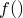

histogram [range specification] <function name> '<datafile>'
[using <using specifier>] [select <select specifier>]
[index <index specifier>] [every <every specifier>]
[binwidth <bin width>] [binorigin <bin origin>]
[bins (x1, x2, ...)]
The histogram command takes a data file and counts the number of points in various bins, producing a function the area under which is equal to the number of points for each bin. The width and starting position of the bins can be specified using the binwidth and binorigin modifiers, or a user-supplied set of bins can be used with the bins modifier. For example:
histogram f() 'output.dat' u 2 binwidth 2
produces a function , which contains the data in the second column of the output.dat file binned into bins of width 2. A range specifier can be used to restrict the set of data in the data file that is to be binned; for example:
histogram [0:10] f() 'data.dat' bins (0,1,3,6,10)
would only bin data between 0 and 10, and would do so into the user-specified bins.